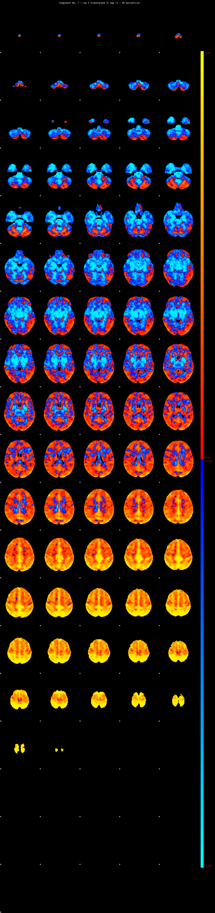
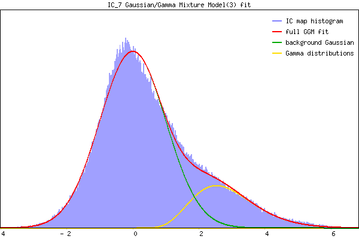

IC_7 Mixture Model fit
Means : 0.000000 2.873219 -1.784307
Vars : 1.000000 0.986596 0.000224
Prop. : 0.815789 0.184211 0.000000
This page produced automatically by MELODIC Version 3.15 - a part of FSL - FMRIB Software Library.